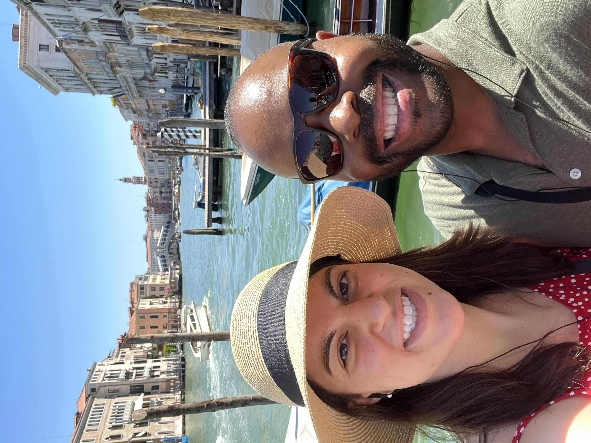
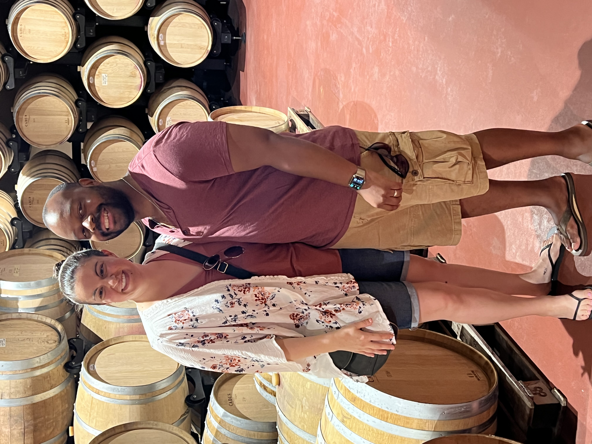
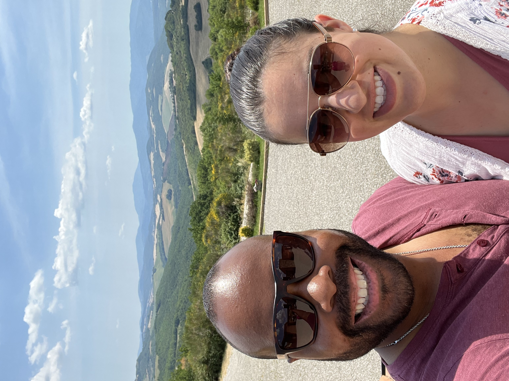

Exploring Rome
Rome, the capital city, was our first stop. The ancient ruins of the Colosseum and the Roman Forum were absolutely breathtaking. We spent hours wandering through the historic streets, marveling at the beautiful architecture.

Rome, the capital city, was our first stop. The ancient ruins of the Colosseum and the Roman Forum were absolutely breathtaking. We spent hours wandering through the historic streets, marveling at the beautiful architecture.
Venice was like stepping into a fairy tale. The gondola ride through the canals was the highlight of our trip. St. Mark's Square was bustling with tourists, and the views from the top of the Campanile were stunning.

The rolling hills of Tuscany were a serene escape from the bustling cities. We visited vineyards and tasted some of the best wines Italy has to offer. The medieval town of San Gimignano was a highlight, with its tall towers and charming streets.
 